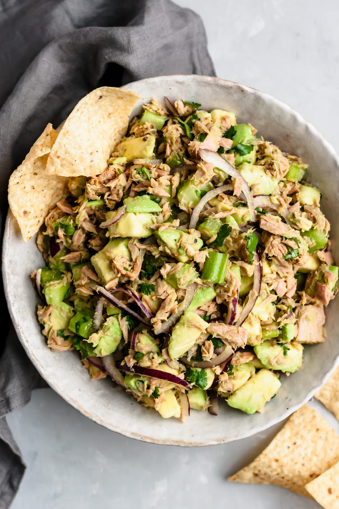

Avocado and Tuna Salad

Ingredients
- 1 can of tuna in water, drained
- 1 ripe avocado, halved and pitted
- 1 tablespoon mayonnaise (or Greek yogurt for a healthier option)
- Salt and pepper to taste
- Optional: A squeeze of lemon juice, chopped cilantro, or parsley for garnish
Process
- Scoop the flesh of the avocado into a bowl, leaving the shell intact for serving.
- Add the drained tuna to the bowl with the avocado.
- Add mayonnaise, salt, and pepper.
- Mix well. Optionally, add a squeeze of lemon juice or some herbs.
- Scoop the mixture back into the empty avocado shells for a neat presentation or serve as is.
Home